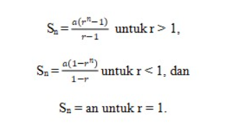

Pengertian Deret Geometri
Deret geometri dapat disebut sebagai jumlah dari barisan bilangan yang suku-sukunya membentuk barisan geometri, sehingga deret geometri mudah untuk dibedakan dari yang lainnya.
Pada deret geometri, suku-sukunya memiliki rasio yang tetap. Rasio adalah perbandingan antar suku-suku pada deret tersebut.
Misalnya perbandingan antara suku kedua dengan suku pertama akan sama dengan suku ketiga dengan suku kedua, begitu pula yang lainnya.
Rumus umum deret geometri adalah:
a, ar, ar2, ar3, ... , arn-1
Sifat-sifat Deret Geometri
- Suku-suku dalam deret geometri diperoleh dengan mengalikan suku sebelumnya dengan rasio tetap (r).
- Jika rasio (r) lebih besar dari 1, deret akan bertambah besar.
- Jika rasio (r) antara 0 dan 1, deret akan menyusut mendekati nol.
- Jika rasio (r) kurang dari 0, deret akan berfluktuasi antara positif dan negatif.
Rumus Deret Geometri
Deret geometri disimbolkan dengan Sn. Deret geometri dapat dirumuskan sebagai:
Keterangan :
- Sn : jumlah suku pada deret geometri
- a : suku pertama pada deret geometri
- r : rasio pada deret geometri
- n : banyaknya suku pada deret geometri
Rumus Jumlah n Suku Pertama Deret Geometri
Misalkan terdapat deret geometri sebagai berikut.
3 + 6 + 12 + 24 + …
Cara menentukan jumlah n suku pertama deret geometri tersebut yaitu:
- Menentukan suku pertama (a).
- Menentukan rasio deret tersebut (r).
- Substitusi nilai a dan r pada rumus deret geometri.
a = 3
r = U2/U1 = 6/3 = 2

Berikutnya akan dijelaskan mengenai deret geometri tak hingga.
Deret Geometri Tak Hingga
Deret geometri tak hingga merupakan deret geometri yang memiliki tak hingga banyak suku atau banyak sukunya mendekati tak hingga (infinite). Perhatikan contoh deret geometri tak hingga berikut.
3 + 1 + 1/3 + 1/9 + …
Deret tersebut memiliki rasio yang tetap yaitu r = 1/3 dan memiliki tak hingga banyak suku sehingga disebut sebagai deret geometri tak hingga.
Untuk menentukan jumlah suku dari deret geometri tak hingga dapat menggunakan rumus deret geometri tak hingga berikut ini.

Keterangan:
- S∞ : jumlah suku pada deret geometri tak hingga
- a : suku pertama deret geometri tak hingga
- r : rasio deret geometri tak hingga(r < 1)
Selanjutnya akan disampaikan penjelasan mengenai menentukan rumus jumlah n suku pertama deret geometri.
Rumus Jumlah n Suku Pertama Deret Geometri
Misalkan terdapat deret geometri sebagai berikut.
3 + 6 + 12 + 24 + …
Cara menentukan jumlah n suku pertama deret geometri tersebut yaitu:
1. Menentukan suku pertama (a).
a = 3
2. Menentukan rasio deret tersebut (r).
r = U2/U1 = 6/3 = 2
3. Substitusi nilai a dan r pada rumus deret geometri.

Setelah kalian memahami penjelasan mengenai deret geometri tersebut, berikut ini terdapat contoh soal dan pembahasan deret geometri.
Contoh Soal Deret Geometri
Contoh Soal 1:
Tentukan jumlah 9 suku pertama dari deret geometri 3 + 6 + 12 + 24 + 48 + …
Penyelesaian:
Diketahui: a = 3
Ditanya: S9
Jawab:
Pertama kita mencari rasio nya terlebih dahulu :

Setelah rasio ditemukan maka kita gunakan rumus untuk mencari suku ke-n nya

Jadi, jumlah 9 suku pertama dari deret tersebut adalah 1533.
Contoh Soal 2:
Seutas tali dibagi menjadi 6 bagian dengan ukuran panjang membentuk deret geometri; jika bagian yang paling pendek 3 cm dan yang terpanjang 96 cm, tentukanlah ukuran panjang tali tersebut!
Penyelesaian:
Diketahui : Un = 96, a = 3, dan n = 6
Ditanyakan : S6
Jawab :
Pertama kita mencari rasio nya terlebih dahulu :
Kita ketahui bahwa suku keenam ar5, maka :

Setelah rasio ditemukan maka kita gunakan rumus untuk mencari suku ke-n nya

Jadi, ukuran panjang tali tersebut adalah 189 cm.
Contoh Soal 3
Diketahui deret geometri tak hingga sebagai berikut.
4 + 2 + 1 + ½ + …
Jumlah deret geometri tak hingga tersebut adalah …
Penyelesaian:
Diketahui : a = 4, dan r = 1/2
Ditanyakan : S∞
Jawab :

Jadi, jumlah deret geometri tak hingga tersebut adalah 8.
Pengaplikasian Deret Geometri
Deret geometri memiliki banyak pengaplikasiannya dalam berbagai bidang, seperti:
- Keuangan: Menghitung bunga majemuk.
- Fisika: Menganalisis peluruhan radioaktif.
- Ekonomi: Memodelkan pertumbuhan populasi.
- Teknologi: Memproses sinyal digital.